Hongos setas
El corazón de NutriZ.
Racimos blancos, carnosos y delicados que cultivamos en bolsas de sustrato y cosechamos con cuidado. Para tinga, caldos, tacos, al ajillo o en coctel.
- Cultivo propio
- Empaque en caja
- Ideal para guisos
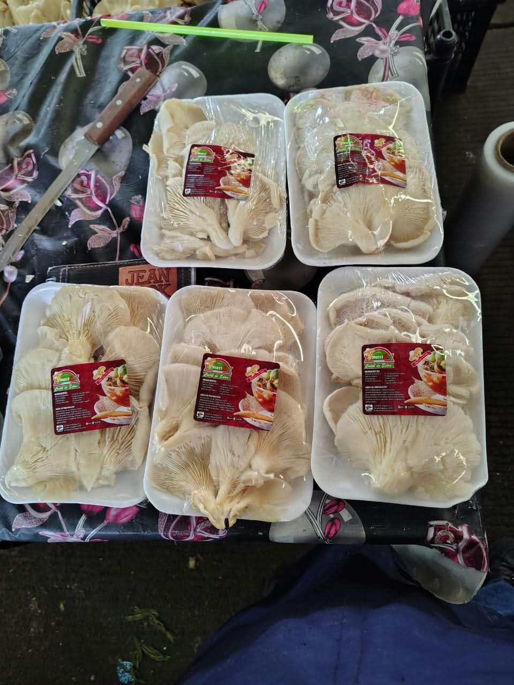
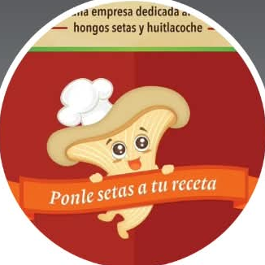
Sembrando micelio… 0 %
Productores en Ixtlahuaca · Estado de México
15 años cultivando hongos setas, huitlacoche, champiñón y portobello con manos mexicanas. Del cuarto de cultivo a las centrales de abasto de Iztapalapa y Guadalajara.
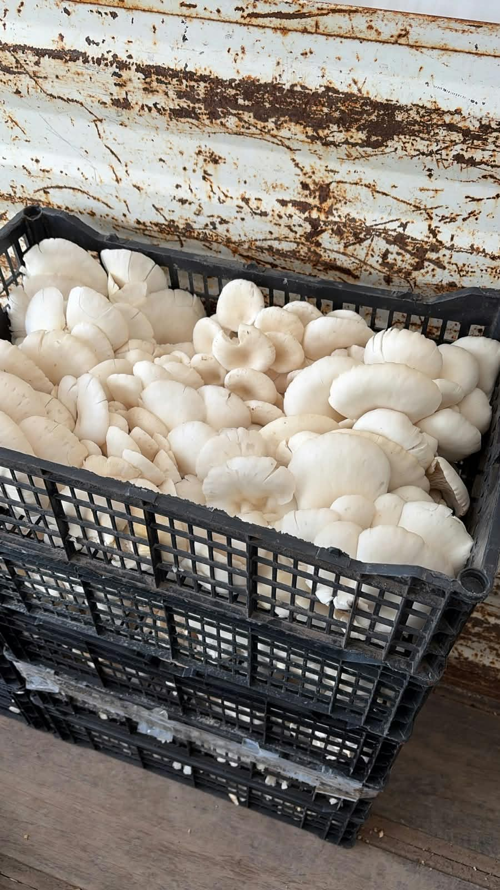
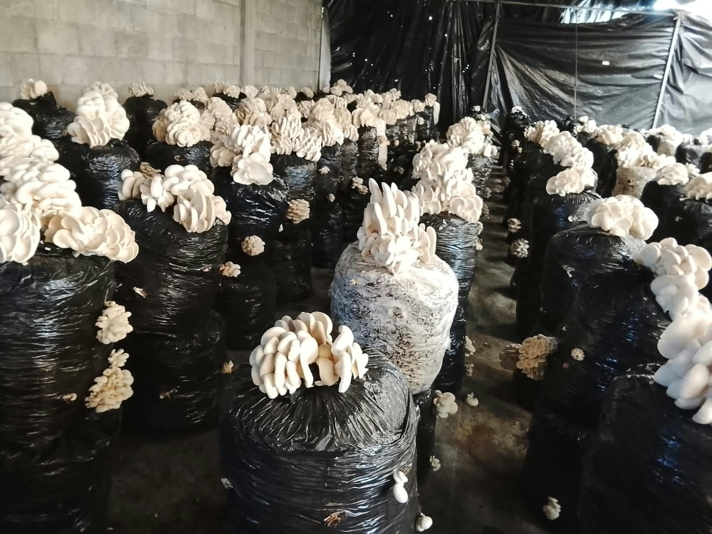
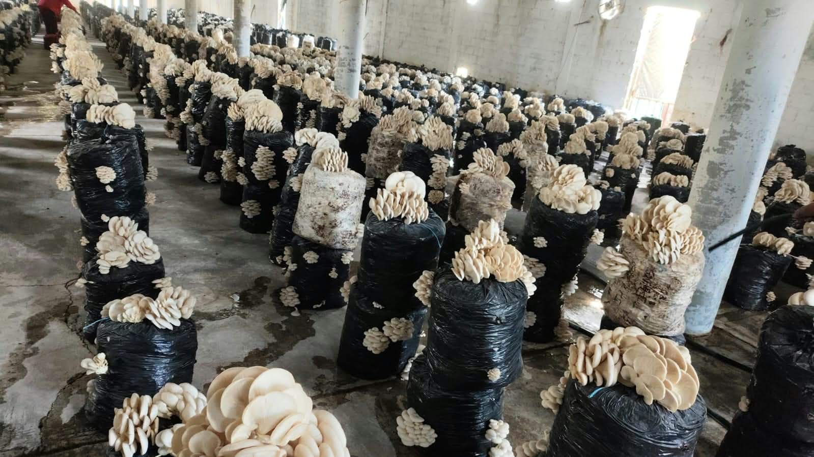
FIG. 01 · Setas en caja
Ixtlahuaca, Edo. Méx.
Central de Abasto · Iztapalapa y Guadalajara
Abierto ahora · hasta las 10:00 p. m.
SETAS • HUITLACOCHE • CHAMPIÑÓN • PORTOBELLO • NUTRILLINAS • HECHO EN MÉXICO •
FIG. 02 · Quiénes somos
Somos una empresa 100 % mexicana dedicada a la producción y distribución de hongos setas y huitlacoche. Llevamos 15 años haciendo crecer lo bueno: en la sombra, con paciencia y con manos mexicanas.
FIG. 03 · Cultivos
Lo que cosechamos, listo para lo que tú cocinas.
El corazón de NutriZ.
Racimos blancos, carnosos y delicados que cultivamos en bolsas de sustrato y cosechamos con cuidado. Para tinga, caldos, tacos, al ajillo o en coctel.

El tesoro de la milpa.
El hongo del maíz, de sabor profundo y ahumado que la cocina mexicana celebra desde hace siglos. Para quesadillas, crepas, sopas y salsas.
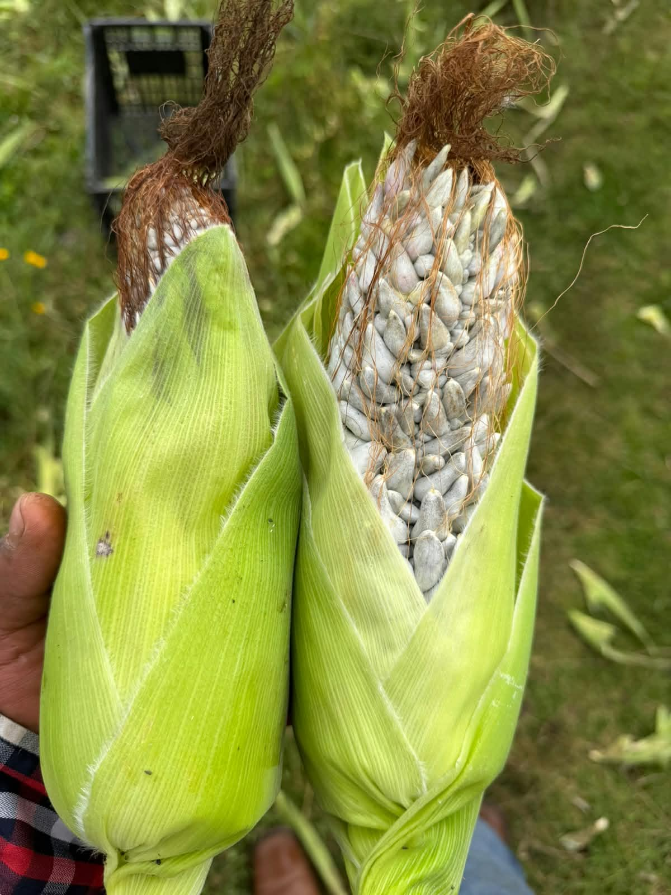
Firmes, redondos y listos para el grill.
Sombreros carnosos y sabor terroso, cultivados en composta. Del salteado rápido al portobello asado.
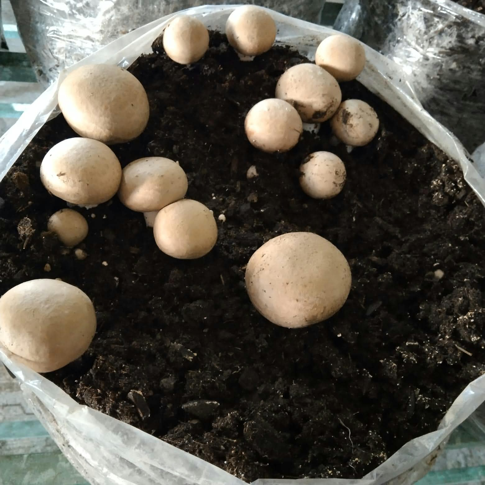
Tortillas… hechas con setas.
Nuestra creación: tortillas de harina a base de hongos setas, en cuatro presentaciones.
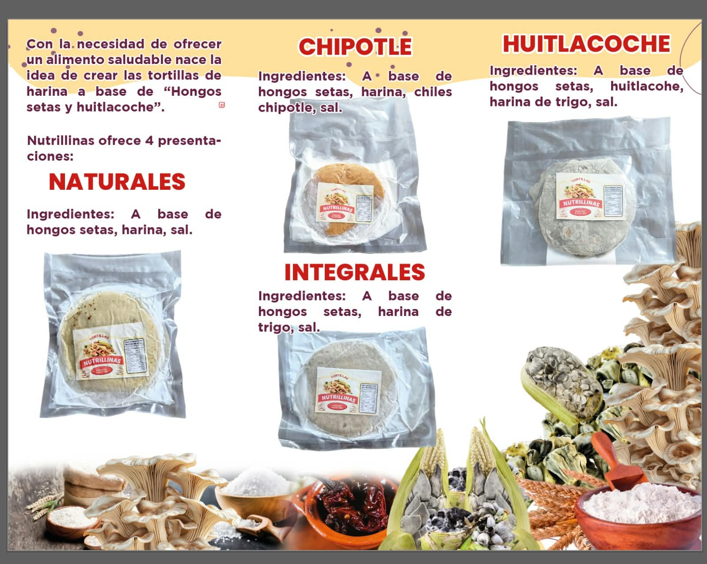
FIG. 05 · Proceso
Preparamos el sustrato y sembramos el micelio. Aquí empieza todo.
Las bolsas reposan en la sombra mientras el micelio lo invade todo.
Humedad, aire y paciencia: las setas brotan en racimos por las bolsas.
Cortamos en su punto y seleccionamos lo mejor para cada caja.
Las cajas viajan a las centrales de abasto de Iztapalapa y Guadalajara.
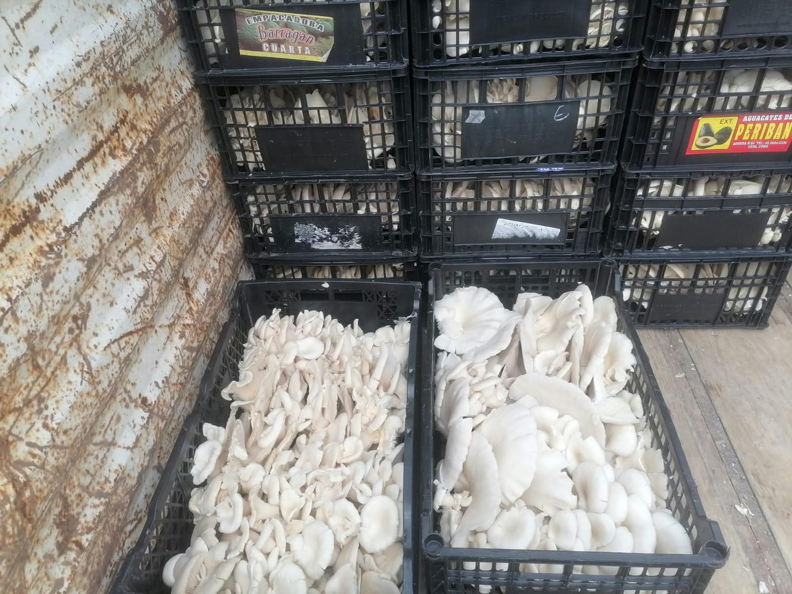
FIG. 05 · Paso 01 / 05
¿Ya probaste setas que vienen directo del cuarto de cultivo?
Quiero que me surtan→FIG. 06 · Nutrillinas
Con la necesidad de ofrecer un alimento saludable nació la idea de crear tortillas de harina a base de hongos setas y huitlacoche.
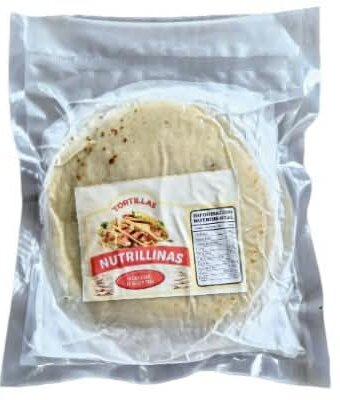
Naturales
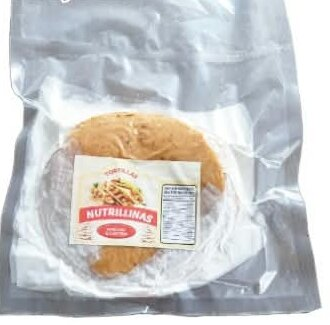
Chipotle
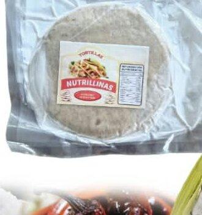
Integrales
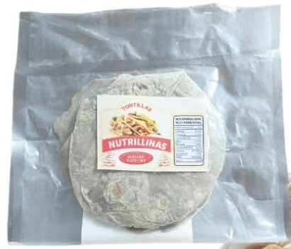
Huitlacoche
Presentación 01 · Naturales
Ingredientes
Presentación 02 · Chipotle
Ingredientes
Presentación 03 · Integrales
Ingredientes
Presentación 04 · Huitlacoche
Ingredientes
FIG. 08 · Etiqueta nutrimental
Información nutrimental por porción de 100 g, según nuestra etiqueta.
Hechas a base de setas y trigo.
FIG. 09 · Receta
Una probadita de lo que se puede hacer en casa: nuestro coctel de setas.
Ingredientes · toca para marcar
Preparación
Hierve las setas con sal y pimienta.
Agrega el jugo de los dos limones.
En un refractario mezcla todos los demás ingredientes.
Incorpora las setas escurridas y revuelve.
Sirve en copas cocteleras, decora con aguacate y cilantro y disfruta con galletas saladas.
Consérvalas en refrigeración a 4 °C.
Quiero setas para este coctel→FIG. 10 · Galería
Toca cualquier foto para verla en grande.
FIG. 11 · Distribución
Santa María del Llano, Ixtlahuaca, Estado de México
9:00 a. m. – 10:00 p. m.
Abierto ahora · hasta las 10:00 p. m.
Central de Abasto de Iztapalapa · Central de Abasto de Guadalajara
FIG. 12 · Contacto
En Santa María del Llano, Ixtlahuaca, Estado de México.
De 9:00 a. m. a 10:00 p. m.
Sí: en la Central de Abasto de Iztapalapa y en la Central de Abasto de Guadalajara.
En refrigeración a 4 °C, como indica nuestra etiqueta.
Son tortillas de harina a base de hongos setas, en cuatro presentaciones: naturales, chipotle, integrales y huitlacoche.
Cuéntanos qué quieres cocinar y te respondemos por WhatsApp.